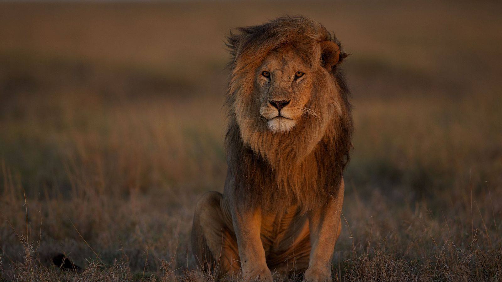
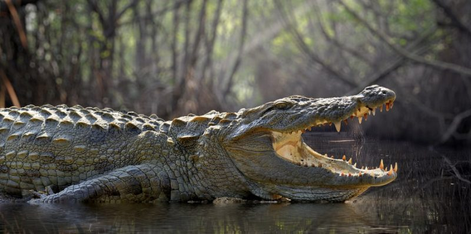
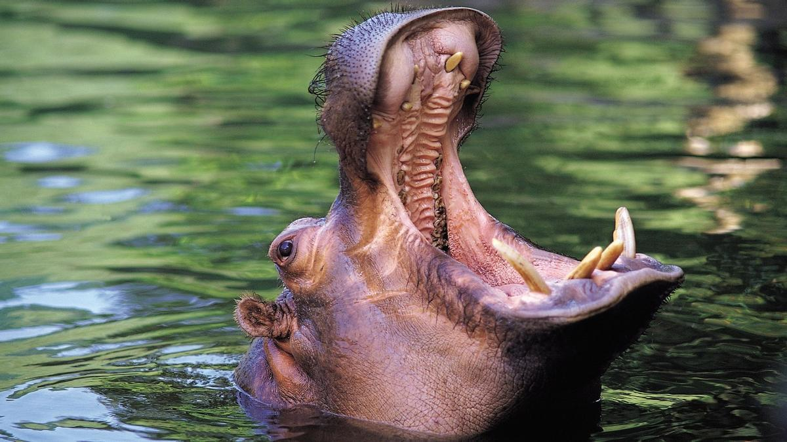
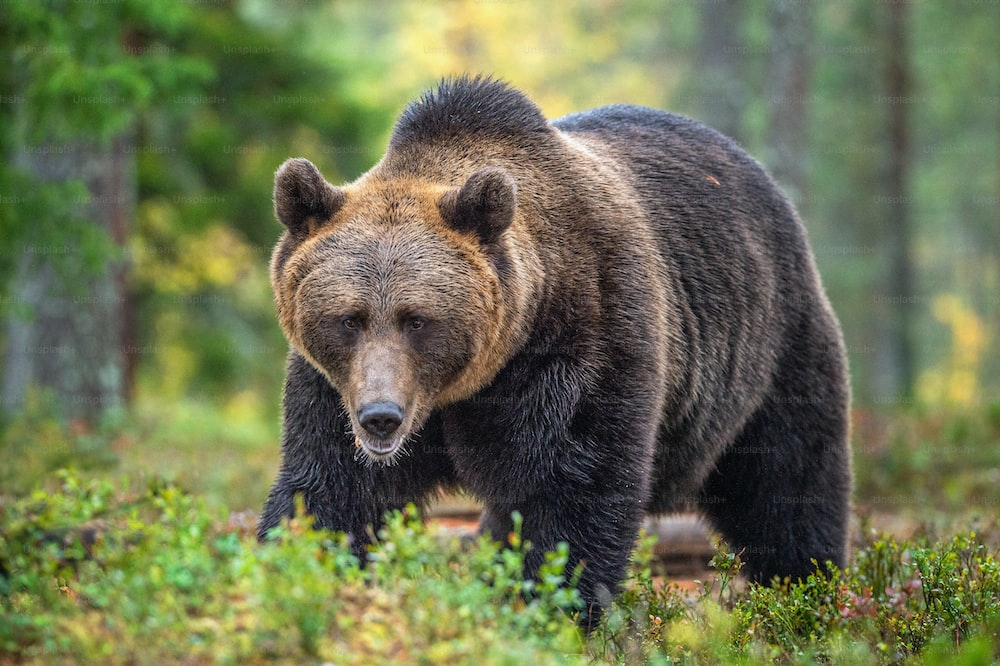
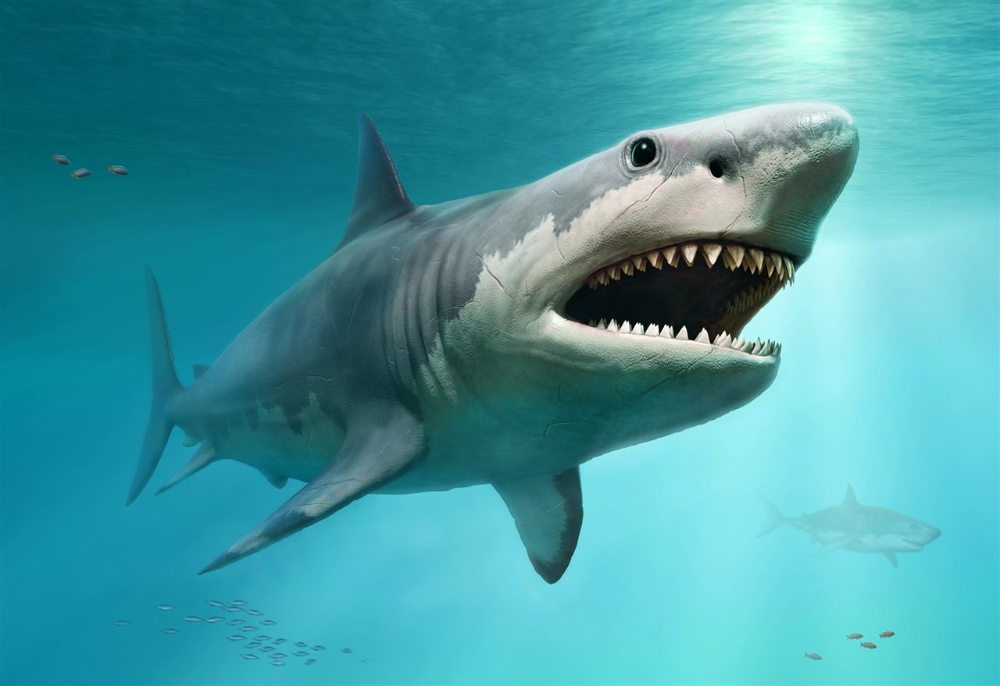

|  |
Leon AfricanoEs capaz de alcanzar una velocidad de 80 km/h, y tanto dientes como garras están muy afiladas para poder atacar a sus presas con eficacia. Suele cazar en grupos y le gusta acechar antes de pasar al ataque.Considerado el rey de la selva, el león africano es uno de los animales más peligrosos del mundo porque una vez que ataca, nuestras posibilidades de sobrevivir son realmente bajas. Igualmente, es una de las especies animales que más sufren el ataque de los humanos y se estima que, a lo largo de las dos últimas décadas, han sufrido un declive de entre el 30y el 50% de su población, lo que los ha puesto en riesgo desaparecer a medio largo plazo. |
|---|---|
|  |
CocodriloEl reptil más grande del mundo es el cocodrilo de agua salada, y es el más peligroso, tanto que suele matar a cientos de personas al año. No merece la pena el riesgo por verlo de cerca. A pesar de ello, debemos saber que solo los cocodrilos más grandes de unos dos metros y medio son realmente peligrosos para el ser humano. El cocodrilo del Nilo y los de aguas saladas son los más peligrosos y los que más gente matan al año. |
|  |
HipopotamoSuelen encontrarse principalmente en África y causan más muertes humanas en ese continente que ningún otro animal de gran tamaño. Tanto hembras como machos tienden a atacar, y no tienen un motivo en particular para hacerlo.Aunque siempre pueden parecer como animales pacíficos, lo cierto es que son propensos a atacar y lo hacen con gran fiereza. Al año se registran alrededor de 500 ataques mortales de hipopótamos a personas. |
|  |
Oso pardoSu tamaño es enorme y la velocidad que puede alcanzar es de 40 km/h. El motivo más habitual que tienen los osos pardos para atacar es para defender a su hembra o cachorros. Habitante característico de los montes maduros de Europa, Asia templada y América del Norte, pueden vivir entre 25 y 30 años, y suelen detectar mucho mejor los objetos en movimiento que los objetos inmóviles. |
|  |
Tiburon blancoSin duda uno de los animales más peligrosos del planeta, ya que una simple mordedura puede matar a una persona. Normalmente se va después de morder, pero el daño ya está hecho. Normalmente, los machos son de menor tamaño que las hembras, variando en los adultos de entre 5 a 7 metros y, aunque no suelen atacar a los humanos, un mordisco del tiburón blanco es casi letal para el ser humano. En los últimos años se han detectado muchos ejemplares en las del Golfo de México, Costa Este norteamericana y el Pacífico. |